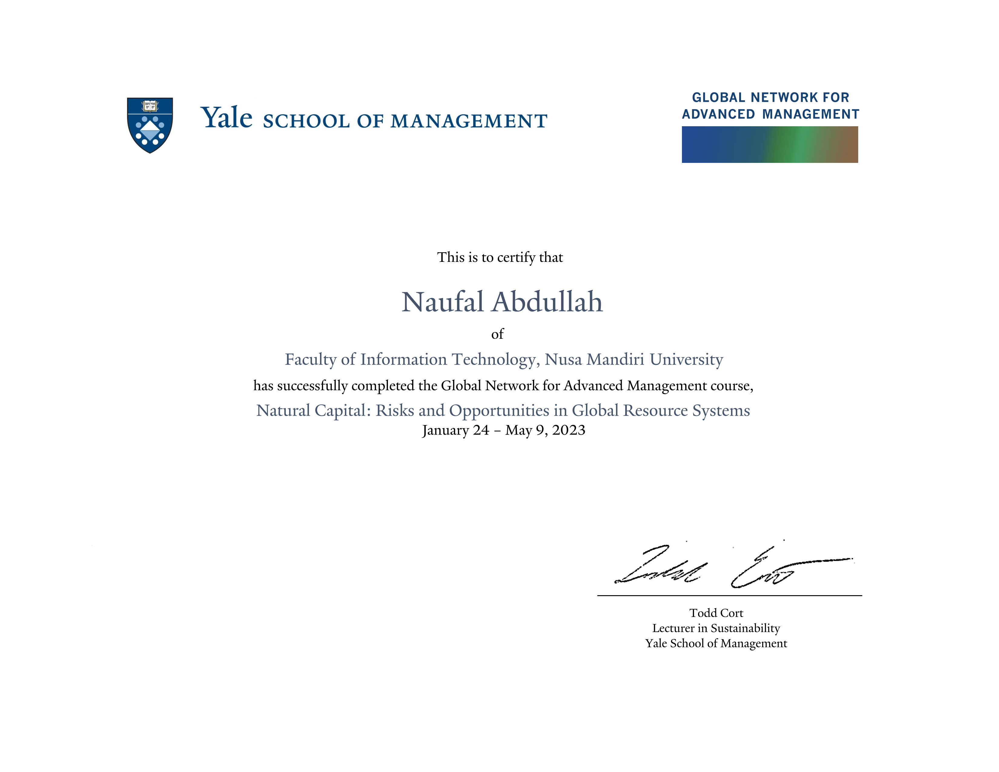
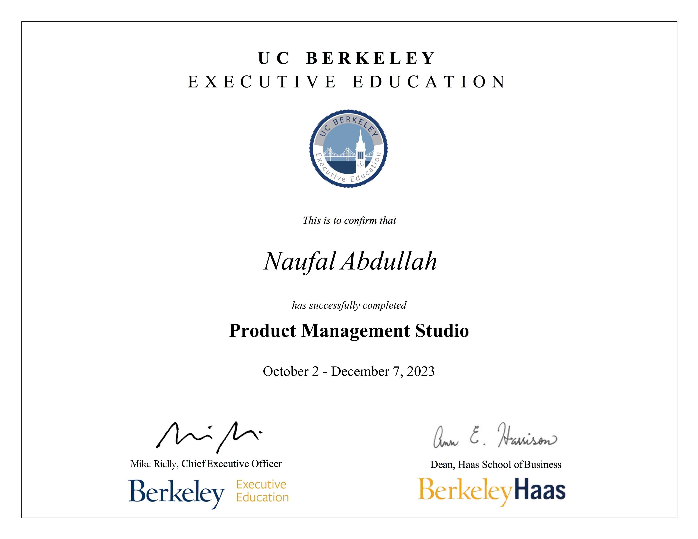
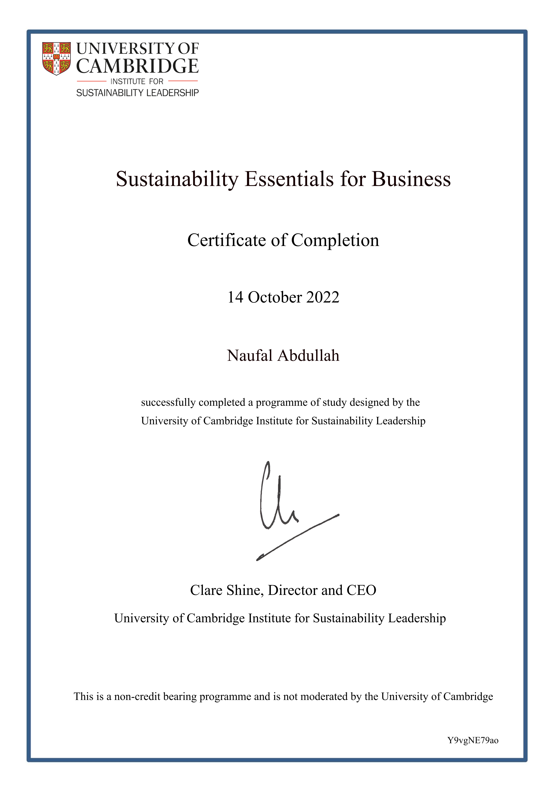
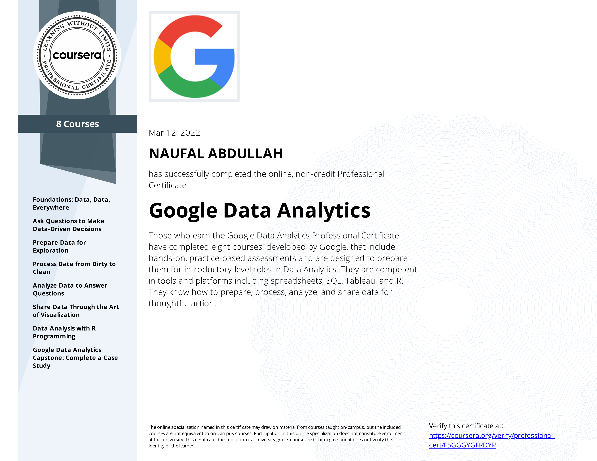

Naufal Abdullah
I graduated from Bachelor of Computer Nusa Mandiri University, Information Systems Study Program, Faculty of Information Technology, graduated with Cum Laude predicate. During college, I succeeded in becoming the Main Outstanding Student of Nusa Mandiri University 2021, and became a campus representative to participate in the 2021 National Outstanding Student (Pilmapres) election. Pilmapres or Selection of Outstanding Students is a student competition organized by the National Achievement Center under the auspices of the Ministry of Research, Technology and Higher Education every year. The goal is to give appreciation to the best students who are ready to become agents of change to build a better Indonesia. With a focus on Bachelor and Associate's programs. (Click Here)
About Me
Coding
Create a website or application that produces responsive web design with a method or approach to a web design system that aims to provide an optimal surfing experience on various devices, both mobile and computer, as well as performing maintenance on the system.
Creative Design
Experienced in graphic design to promote / campaign brands or products to customers on all social media platforms, and detailed copywriting on each product description, with a very high level of customer satisfaction.
Personal Skills
Experience working with teams as leaders, and have expertise in soft skills such as communication, problem solving, time management, and critical thinking carried out in every work ethic.
Portfolio
----
Ivy League and some other Top Universities
I already have a collection of official certificates consisting of the Ivy League and several other prestigious Top Universities, including Harvard University, Massachusetts Institute of Technology, University of Oxford, Stanford University, Wharton School of the University of Pennsylvania, Yale University, Cornell University, National University of Singapore, University of California, Berkeley (UC Berkeley), California Institute of Technology (Caltech), INSEAD, Dartmouth College, Columbia University, Arizona State University, Brown University, University of Cambridge, Rice University, Google, IBM, as well as several other achievements..
THE CREDENTIAL OF READINESS - PASS WITH HONORS
-
Have successfully completed 3 courses: Business Analytics, Economics For Manager, Financial Accounting.
CERTIFICATE OF SPECIALIZATION IN LEADERSHIP & MANAGEMENT
-
Have successfully completed 3 courses: Leadership Principles, Management Essentials, Organizational Leadership.
CERTIFICATE OF SPECIALIZATION IN STRATEGY
-
Have successfully completed 3 courses: Business Strategy, Strategy Execution, Sustainable Business Strategy.
CERTIFICATE OF SPECIALIZATION IN ENTREPRENEURSHIP AND INNOVATION
-
Have successfully completed 3 courses: Entrepreneurship Essentials, Disruptive Strategy, Negotiation Mastery.
CERTIFICATE OF SPECIALIZATION IN BUSINESS IN SOCIETY
-
Have successfully completed 3 courses: Global Business, Power and Influence for Positive Impact, Sustainable Investing.
HARVARD MEDICAL SCHOOL - IDENTIFICATION, COUNSELING, AND TREATMENT OF OUD
-
This is one of three courses that comprise the Opioid Use Disorder Education Program (OUDEP), an innovative interprofessional continuing education program produced by Harvard Medical School (HMS).
CERTIFICATE OF COMPLETION NEGOTIATION ESSENTIALS ONLINE
-
Negotiation is a discipline, with its own concepts and skills to be practiced and mastered. At the Program on Negotiation, we like to say that great negotiators are not born, they’re made. Although negotiation skills are critical, both professionally and personally, they are not often taught in school or on the job.
CERTIFICATE OF COMPLETION HARVARD MEDIATION INTENSIVE
-
We also welcome professionals from all backgrounds, industries, and countries who wish to improve their ability to mediate. Previous participants have included lawyers, judges, executives, directors, managers, doctors, teachers, ministers, and administrators.
CERTIFICATE OF COMPLETION NEGOTIATION AND LEADERSHIP
-
At Negotiation and Leadership, you will test your beliefs and assumptions, overcome emotional and rational biases, examine complex negotiation scenarios, and discover a range of competitive and cooperative negotiation strategies. In this acclaimed program, we compress 30 years of groundbreaking research into six thought-provoking sessions. In sessions taught by our expert faculty, you’ll broaden your understanding of negotiating concepts, acquire proven negotiating techniques, and have the opportunity to put your learning into practice.
CIRCULAR ECONOMY - TRANSITION FOR FUTURE SUSTAINABILITY
-
By shifting your organization to a Circular Economy, you can ensure growth over time while treating waste as a design flaw. In a Circular Economy, a specification for any design is that the materials reenter the economy at the end of their use, therefore increasing profits while ensuring sustainability, longevity, and societal wellbeing. By doing this, we take the outdated linear system and make it circular with increased resiliency for the environment and business infrastructure.
DIGITAL TRANSFORMATION - FROM AI AND IOT TO CLOUD, BLOCKCHAIN, AND CYBERSECURITY
-
Digital transformation has experienced a rapid evolution that affects practically every aspect of our lives, and this is only the beginning of an accelerating advancement in technological and data-driven practices. This situation, without the proper education on these paradigm-shifting technologies has carried professionals to a position with a lack of answers, which creates difficulties in maintaining updates and leading the necessary changes to stay ahead in organizations.
LEADERSHIP IN A EXPONENTIALLY CHANGING WORLD
-
In a world that is changing exponentially, the skills needed to lead have evolved. In order to manage teams more effectively and become a successful leader, professionals need to identify their personal leadership style and adapt their approaches. A 21st century construct for leading requires leveraging others – both inside and outside a team and organization – to successfully address and overcome organizational challenges, and drive innovation.
ARTIFICIAL INTELLIGENCE - IMPLICATIONS FOR BUSINESS STRATEGY
-
Through an engaging mix of introductions to key technologies, business insights, case examples, and your own business-focused project, your learning journey will bring into sharp focus the reality of central AI technologies today and how they can be harnessed to support your business needs.
DIGITAL BUSINESS STRATEGY - HARNESSING OUR DIGITAL FUTURE
-
In recent years, innovative businesses have used a range of novel digital tools, from apps to AI, to invent new business models and delight customers with convenience, high quality, and low prices.
PRICING - USING DATA TO IMPROVE PRICING PERFORMANCE
-
This online program will equip you with the skills and understanding to accurately and effectively price new or existing products or services, with a focus on providing economic value to the customer. You’ll learn to adopt a data-driven approach that explores regression analysis, survey techniques, and conjoint analysis. You’ll also discover the limitations of historical data in the context of pricing.

OXFORD EXECUTIVE LEADERSHIP PROGRAMME
-
This leadership development programme helps leaders from multiple sectors answer this complex question, and empowers them to drive change within their organisations. By examining personal motivation and purpose, and aligning with the goals of the business, you will be equipped to successfully navigate the challenges of leadership and manage high-performance teams.
OXFORD EXECUTIVE FINANCE PROGRAMME
-
This programme is designed to build your proficiency in finance at an executive level by demystifying the nuances of financial practice and providing you with an overview of how firms make strategic, finance-driven decisions.
OXFORD LEADING STRATEGIC PROJECTS PROGRAMME
-
The dynamic nature of the modern business environment means traditional management metrics such as time, cost, and scope are no longer sufficient to gauge success. To create long-term sustainable value, businesses need to implement and manage projects that are aligned with organisational strategy.
OXFORD LEADING SUSTAINABLE CORPORATIONS PROGRAMME
-
This programme takes you beyond traditional views of measuring and reporting on performance, to integrating ESG management into your business practice. Focus on sustainable development as you equip yourself with the essential skills to address the need for sustainable business management.
OXFORD ENTREPRENEURSHIP VENTURE FINANCE PROGRAMME
-
The Oxford Entrepreneurship: Venture Finance Programme is aimed at those who are starting a new business or scaling an existing venture and would like to gain a comprehensive understanding of the industry. It’s also designed for current or aspiring investors wanting to break into venture financing.
OXFORD PRIVATE MARKETS INVESTMENTS PROGRAMME
-
The Oxford Private Markets Investments Programme will build on your existing financial industry experience to broaden your knowledge of this niche sector, enabling you to diversify your investment portfolio and the services you offer clients.
OXFORD BLOCKCHAIN STRATEGY PROGRAMME
-
Cryptocurrencies and blockchain-based financial systems regulate trillions of dollars in assets and facilitate trillions in economic transactions. In the future blockchain technology could radically transform the role businesses, institutions and governments play in our world.
STANFORD LEAD PROGRAM
-
Stanford LEAD helps you discover your purpose and maximize your potential to meet the demands of today’s dynamic world. Taught by the same world-renowned Stanford Graduate School of Business faculty who teach in our MBA program.
DATA - DRIVEN DECISION MAKING
-
Data is a vital tool for business leaders — if, and only if, you know the right questions to ask to collect unique and relevant data for your business. That’s what Data-Driven Decision Making is all about.
DESIGN THINKING FROM INSIGHTS TO VIABILITY
-
It is becoming increasingly recognized that innovations that succeed follow a systematic, rigorous process of need identification, hypothesis generation, testing, learning, and iteration.

DISCOVER THE PATHS TO POWER
-
There is a direct correlation between the understanding and mastery of power dynamics and personal and professional satisfaction and wellbeing. Discover the Paths to Power will build your power skills and teach you how to wield them — for maximum effect and impact. In this Stanford GSB on-demand course, you will gain access anytime, from anywhere, to proprietary Stanford GSB research-based content.
HOW FINTECH AND BANKS ARE RESHAPING THE FINANCIAL SERVICES ECOSYSTEM PROGRAM
-
Innovation in financial technology combined with novel business models is leading companies in the financial services industry — incumbents and recent entrants alike — to reassess their competitive advantages.
LEVERAGE DIVERSITY AND INCLUSION FOR ORGANIZATIONAL EXCELLENCE
-
Leverage Diversity and Inclusion for Organizational Excellence will teach you to increase your talent pool, encourage diverse perspectives to drive individual and team performance, and eliminate impediments to create an inclusive workplace where employees feel that their endeavors are valued.
SHARPEN YOUR COMMUNICATION SKILLS
-
Sharpen Your Communication Skills will explore the behavioral science research behind effective communication practices to help you refine your communication skills — and be sure that your message is heard.
CHIEF TECHNOLOGY OFFICER PROGRAM
-
The rise of enterprise technology has accelerated, giving businesses a competitive edge as they embrace the latest developments in their quest to leverage organizational change. As technology’s importance increases, so too does that of the chief technology officer (CTO), whose unique combination of technical and institutional knowledge has only become more vital.
BUSINESS ANALYTICS FROM DATA TO INSIGHTS ONLINE CERTIFICATE PROGRAM
-
Wharton’s three-month online certificate program — Business Analytics From Data to Insights — provides managers and leaders an understanding of how analytics can help improve their decision-making process. This program will help you look at data and identify insights, improve your ability to make predictions for the long term, and prescribe future actions that help make better business decisions.
MANAGEMENT DEVELOPMENT PROGRAM DEVELOP YOUR MANAGERIAL MINDSET ONLINE CERTIFICATE PROGRAM
-
Managing the budget is important. But building trust and effective communication are also critical skills for today’s managers.
FINTECH REVOLUTION TRANSFORMATIVE FINANCIAL SERVICES AND STRATEGIES
-
If your business needs to leverage technology to create better financial services, the Fintech Revolution program will help you understand disruptions in the fintech industry across a broad cross-section of products and services, from traditional banking to blockchain. The goal is for you to create an action plan to foster innovation in your organization. You will learn how fintech can help you reach untapped markets, reduce costs, create economies of scale, and improve customer experience.
EXECUTIVE PRESENCE AND INFLUENCE PERSUASIVE LEADERSHIP DEVELOPMENT
-
The demands on today’s executive leadership have accelerated. This means that present and future leaders must display C-suite readiness, shape opinion, and mobilize teams to deliver to new standards. This program provides the necessary tools to develop executive presence into meaningful influence. It is a tool to craft an impactful presence through the strategic application of persuasive techniques, including personal growth, building a diverse network, and effectively communicating your vision.
REVENUE ANALYTICS PRICE OPTIMIZATION
-
Revenue optimization is at the core of today's competitive marketing and sales strategies — and the most successful organizations are adopting data analytics tools and techniques to make the smartest forecast and pricing decisions. This is why revenue analytics professionals and other marketing professionals with tactical skills in analytical tools are highly sought after today.
MASTERING TALENT MANAGEMENT HIRING, ENGAGING, AND REWARDING A+ TALENT
-
If you were to write this story, how would it unfold? Would it relate the tale of an organization that lagged behind because it didn’t nurture its talent — or would it recount the narrative of a organization propelled forward by committed, connected employees? Would the plot fall flat — or would it send job seekers on a journey to find out more and move them to become part of the action? Turns out, a story is just what it takes.

NATURAL CAPITAL RISKS AND OPPORTUNITIES IN GLOBAL RESOURCES SYSTEMS
-
Natural resource constraints affect most, if not all, functional areas of the modern corporation. Many large companies are taking proactive approaches to managing these risks and capturing the opportunities they create. As such, they are increasingly expecting their employees to have a basic familiarity with the environmental and social, as well as the economic, megatrends affecting these systems.
DIGITAL TRANSFORMATION STRATEGY
-
As technological advancements continue to radically alter the business landscape, digital transformation strategies are no longer a nice-to-have, they’re required. However, digital transformation isn’t solely reliant on adopting new technologies. It demands new ways of thinking about how business is done, who the work is done by, and the customer experience attached to it. The case for a cohesive innovation strategy is only growing bolder as top performing companies see the potential of these transformative tactics unfold.
ACCELERATED MANAGEMENT PROGRAM
-
The online Accelerated Management Program, from the Yale School of Management Executive Education, will provide you with key tools and insights integral to becoming an effective manager. You’ll gain a deeper understanding of the connection between different organizational functions, as you engage with a unique integrated curriculum and a raw case study from the Yale School of Management’s directory.
LEADERSHIP FOR GLOBAL BUSINESS AND POLITICS
-
This program will offer business leaders an evolved perspective on these critical forces. It provides strategies, language, frameworks, and tools to analyze and respond to these factors for a competitive advantage.
FINANCING AND DEPLOYING CLEAN ENERGY
-
Financing and Deploying Clean Energy (FDCE) is a 10-month admissions-based online certificate program at Yale that trains and connects rising leaders to catalyze an equitable transition to a clean economy. FDCE participants join a growing network of clean energy experts at the forefront of our energy transition and build key abilities in the areas of policy, finance and clean technology.
BUSINESS MANAGEMENT ESSENTIALS
-
Mastering the fundamentals of business management is critical to success in any industry, whether you work in a large organization or run your own small business. No matter the size of your budget or staff, you need to manage your money well, market your product effectively, and make sure the right people are motivated and supported to help achieve your goals. Perhaps most importantly, you need to be able to adapt based on new information and ever-changing market conditions.
DESIGN THINKING
-
In this program, you will master a robust, human-centered approach to designing and improving products, experiences and systems at any scale. Working either on your own or with a team of your choosing, you’ll start by defining the problem or challenge you seek to address and then gather key user insights and emotions that will help you develop personas and user narratives. From there, you’ll move into idea generation and rapid prototyping for potential solutions and improvements. Informed by testing and analysis, you’ll learn to iterate on and refine your prototype using design thinking methodology to ultimately generate a rigorous, viable design solution.
DIVERSITY AND INCLUSION
-
An organization is only as good as its culture—and building that culture is not only a role for HR, it’s every manager’s and employee’s responsibility. As today’s headlines prove, an inclusive work environment is not just a nice-to-have, it can make or break a company. You can help make your organization a more supportive and engaging place to work by understanding the perceptual, institutional, and psychological processes that impact the ways people interact with each other. Starting with a look at employee engagement, then identifying interventions surrounding unconscious bias and specific diversity, equity, and inclusion strategies, this program is appropriate for anyone committed to going beyond mere compliance to build a truly aware and inclusive work culture.
DIVERSITY AND INCLUSION FOR HR
-
An organization is only as good as its culture—and building that culture frequently begins with the HR department. Diversity, Equity, and inclusion have evolved from a focus on compliance to a strategic-level cultural effort with a demonstrated positive impact on a company’s performance and business results. Today such a culture is much more than a legal or moral requirement; it’s also a competitive advantage.
MARKETING STRATEGY
-
In this certificate program, you will build the skills needed to take a product to market, leveraging analytics at each stage to make informed decisions. You will discover how to craft a marketing strategy for both going to market and managing existing customers, as well as the basic quantitative methods that support it, including market segmentation, targeting, positioning, product development and testing, pricing, channels, and promotion.
PRODUCT MANAGEMENT
-
The courses are designed to give product managers a deeper understanding of what it takes to bring a product from idea, to launch, to future iteration. You will begin by defining the problem a product will solve as you map the customer’s journey and articulate user personas.
PROJECT MANAGEMENT
-
Earn 50 project management education hours towards your PMP (Project Management Professional) certification and exam when you complete Cornell’s Project Management certificate program.
REAL ESTATE PROPERTY MANAGEMENT
-
This program provides you with the knowledge and skills you need to fully understand the integral components of the real estate business. By exploring a potential asset from the perspective of the owner as well as the property manager, you will acquire a robust skill set pertaining to the development process, project planning, and project implementation. You will begin by looking at the distinctions among different types of property maintenance issues and how to best address them in order to reduce expenses and environmental impact.
SERVANT LEADERSHIP
-
In addition to developing your leadership character, this certificate provides you with skills needed to enhance your credibility as a leader and consider the power of both perception and experience as you build a culture of service leadership.
SOCIAL MEDIA MARKETING
-
This certificate program will help you develop a strategic approach to executing today’s most relevant digital marketing tactics using social media platforms. Throughout the program, you will examine social media platform best practices to design a robust social marketing strategy and create brand-centered social content that aligns with your marketing objectives.
STRATEGIC HUMAN RESOURCES LEADERSHIP
-
This certificate consists of six two-week courses. This advanced HR management certificate program provides a broad organizational perspective, laying the foundation for you to identify, develop, and measure HR initiatives critical to your firm’s bottom-line success.

ACCELERATED MANAGEMENT PROGRAM (NUS AMP)
-
Through the course of 9-months, you will build a solid foundation in Strategy, Leadership and Finance and gain critical skills in emerging areas such as Digital Business and Transformation, Marketing Analytics and Growth Hacking, as well as other cross-functional business skills to develop a growth mindset for your business, organization, and industry. You will prepare to leverage accelerating trends in emerging technologies and changing business models and learn to use strategic insights and leadership practices to establish yourself as a transformational business leader.

DIGITAL MARKETING - STRATEGIES, MODELS AND FRAMEWORKS
-
In this programme, you will gain an end-to-end perspective of the modern digital marketing process, practice and strategies which are relevant to marketers as well as business managers interested in the economics of the internet.

DIGITAL TRANSFORMATION - RETHINK YOUR BUSINESS FOR GROWTH PROGRAMME
-
This programme is designed to provide you with a sufficiently broad view of digitalisation possibilities and a sufficient depth of understanding to get started in a short timeframe. We start with core modules that introduce strategic concepts and design thinking frameworks that can be applied across any identifiable business digitalisation opportunity.
TRANSFORMING CUSTOMER EXPERIENCE - STRATEGIES FOR SERVICE INDUSTRY
-
In this programme—offered by NUS Business School—you can gain the competencies you need to become a customer-focused business leader capable of delivering more value for your organisation, employees and customers.
BERKELEY EXECUTIVE LEADERSHIP PROGRAM
-
Berkeley Executive Leadership is our flagship program exclusively tailored for global executives seeking to advance their leadership qualities, develop a deeper connection to their talents, and build skills that strategically address business challenges head-on. This inspiring and unique senior executive leadership program equips you with cutting-edge leadership styles to apply strategic decision-making and improve employee retention, all while empowering you to become the most prominent team leader you can be.
NEGOTIATION AND INFLUENCE PROGRAM
-
The importance of negotiation skills for professionals cannot be overemphasized. Believe it or not - these skills don’t just impact your job performance. Remember - a negotiation can be a salary negotiation, securing approval for a proposed project, or balancing work, kids, and a partner at home in an evolving world.

PRODUCT MANAGEMENT STUDIO
-
Product Management Studio is an immersive online product management training where you will master the skills needed to create product teams and experiences that balance customer empathy and data-based decision making. Get ready to dive into the elements involved in product management and develop a strong sense of pricing strategies, portfolio planning, the business model canvas, and negotiation tactics.
POST GRADUATE PROGRAM IN CLOUD COMPUTING CERTIFICATE PROGRAM
-
Master cloud computing with Clatech PGP in Cloud Computing. A comprehensive online program that helps you acquire in-demand cloud computing skills and earn a prestigious certification from Caltech.
CALTECH CYBERSECURITY CERTIFICATE PROGRAM
-
In recent years, cybercriminals that had been relegated to nuisance status in the past have become major threats to organizations of every type. At present, ransomware, supply-chain breaches, phishing attacks, and other strains of cyberattacks are capable of bringing organizations’ operations to a standstill. Even more recently, the has been a significant rise in state-sponsored attacks targeting international business, governments, citizens, and critical infrastructure.
CALTECH DATA ANALYTICS CERTIFICATE PROGRAM
-
The Caltech five-day Introduction to Data Analytics Certificate Program will provide you with the knowledge and skills you need to better understand your customers and your processes. With descriptive and predictive analytics, you will be able to uncover patterns and trends in your data—whether it relates to finance, service delivery, or marketing—and quantitatively make successful business decisions.
MODEL-BASED SYSTEM ENGINEERING CERTIFICATE PROGRAM
-
Our experts pioneered the field and will guide you through project-based efforts. You can build to case materials on autonomous systems ventures or choose to model your own initiative. Either way, we'll advise you along the way on considerations, trades, and coaching for implementation.
DATA ANALYTICS BOOTCAMP
-
Data Analysts are in high demand in the U.S. as a result. For anyone with a curious mind and a desire to solve problems, a career in data analysis can be rewarding. In the Caltech Data Analytics Bootcamp, you will gain skills, experience, and career support that will help you establish yourself as a data analyst.

CYBERSECURITY BOOTCAMP
-
Companies rely on cybersecurity professionals to protect their critical systems and sensitive data from cyberattacks. There are plenty of career and financial opportunities for cybersecurity professionals, thanks to the high demand for talent. Lightcast™ reports that the average entry-level Cybersecurity Analyst salary in Los Angeles is $80,700. Cybersecurity salaries can be increased by obtaining additional security clearances.
PG CLOUD COMPUTING
-
Master cloud computing with Clatech PGP in Cloud Computing. A comprehensive online program that helps you acquire in-demand cloud computing skills and earn a prestigious certification from Caltech.
PG CLOUD COMPUTING CTME
-
Fast-track your career by mastering Cloud Architecture principles, covering the top 2 platforms: AWS and Azure. With hands-on industry projects, you will learn to design, plan, and scale advanced cloud implementations.
CERTIFICATE IN CORPORATE GOVERNANCE
-
Following the completion of either the International Directors Programme or the International Directors Banking Programme, participants receive the INSEAD Certificate in Corporate Governance. The certification is designed to be a global credential for board members operating internationally – the first of its kind offered by an academic institution. In addition, certificate holders can become a part of the INSEAD alumni community.
EXECUTIVE PRESENCE AND INFLUENCE
-
Integrating the latest research and thinking around communication, body language, trust and the science of influence, the programme also offers a highly hands-on approach and constructive exercises that will accelerate your self-awareness and practical understanding.
EXECUTIVE PRESENCE AND INFLUENCE
-
Integrating the latest research and thinking around communication, body language, trust and the science of influence, the programme also offers a highly hands-on approach and constructive exercises that will accelerate your self-awareness and practical understanding.
STRATEGY IN THE AGE OF DIGITAL DISRUPTION
-
Strategy in the Age of Digital Disruption provides the strategic tools, concepts and perspectives that will allow you to develop a strategic response to the new digital possibilities and to then align your organisation for effective strategy execution. It will support you in becoming more proactive in the digital domain, help you turn digital threats into opportunities, and allow you to leverage digital to create competitive advantage and enhanced performance.
MANAGEMENT ESSENTIALS
-
The Impact Academy is an exciting new series of programs created especially for the Olympic and Paralympic Movement by Tuck Executive Education at Dartmouth. Each program offers Team USA athletes and USOPC, NGB, and LA28 employees the opportunity to build their professional network with others in the movement and learn immediately applicable skills for work and life. As the first learning and development opportunity for both employees and athletes, the Impact Academy is designed to help everyone learn together as a community, as an investment in their growth.
CERTIFICATE IN BUSINESS EXCELLENCE
-
Earn your Certificate in Business Excellence by earning 18 certificate credits over four years. Create your customized learning path, assembling programs in any or all categories (general management, finance and investing, leadership, strategy and innovation, marketing, digital business, negotiation and decision making, corporate governance, and business and society) and formats (in-person, live online, or online) that will best help you meet your professional development goals.
TEACHING ENGLISH TO SPEAKERS OF OTHER LANGUAGES
-
The undergraduate certificate program in teaching English to speakers of other languages consists of key courses that provide students with the practical skills and confidence necessary to teach English as a second or foreign language anywhere in the world. This certificate can be added to any degree program and includes a supervised TESOL internship to gain valuable hands-on experience before graduation.
IMPROV YOUR COMMUNICATION TEAMWORK
-
Career development begins with your particular department. However, there is a wide array of resources provided by the Office of BioMed Faculty Administration including resources specifically to help orient new faculty, resources specifically for faculty within the division of biology, and resources for clinical faculty. Information regarding standards and criteria for promotions by rank and track are also provided.

CERTIFICATE OF COMPLETION SUSTAINABILITY ESSENTIALS FOR BUSINESS
-
Sustainability Essentials for Business helps individuals better understand global sustainability trends and effective business responses and actions. Supporting learning, innovation and leadership, the online sustainability course will help you identify areas of personal and professional relevance within your sphere of influence.
THE FUNDAMENTALS OF DIGITAL MARKETING
-
Master the basics of digital marketing with our free course accredited by Interactive Advertising Bureau Europe and The Open University. There are 26 modules to explore, all created by Google trainers, packed full of practical exercises and real-world examples to help you turn knowledge into action.
RICE UNIVERSITY CYBERSECURITY BOOT CAMP
-
At Rice University Cybersecurity Boot Camp, students get hands-on training in networking, systems, web technologies, databases, and defensive and offensive cybersecurity. You will also learn methods, techniques, and best practices for accurately conveying the severity of the risks facing an organization’s security posture.
ABNORMAL PSYCHOLOGY SPECIALIZATION
-
This specialization provides an introduction to the study of abnormal psychology, with a survey of various mental health concerns through both a modern and historical lens. It concludes with an opportunity to practice effecting behavioral change in your own life through an overview of scientifically-supported treatment strategies.
BLOCKCHAIN SPECIALIZATION
-
This four-course Specialization introduces you to the world of blockchain technology—explaining what blockchain is, how it works, and why it’s revolutionary. You will learn about various categories of cryptoassets, and the ways they can be transacted on a blockchain. You will learn how blockchain is disrupting business models and financial services, offering organizations new choices in how they create and manage value.
BUSINESS STRATEGY SPECIALIZATION
-
This Specialization covers both the dynamics and the global aspects of strategic management. You'll learn how to evaluate industry evolution, build and sustain competitive advantage, formulate and assess business strategies, and align efforts to organizational strategy. In the final Capstone Project, you’ll apply your skills by creating a comprehensive Strategic Analysis for an existing business or a venture of your own.
CLIMATE CHANGE AND HEALTH - FROM SCIENCE TO ACTION SPECIALIZATION
-
Climate change is arguably the greatest public health threat we face. To address it successfully, health and environmental professionals, advocates, and others need to acquire new skills and a deeper understanding of its challenges and solutions. This specialization is for those who wish to understand the impact of climate change on health and are committed to protecting the health of populations using the knowledge and skills they will acquire.
DIGITAL MARKETING SPECIALIZATION
-
This Specialization explores several aspects of the new digital marketing environment, including topics such as digital marketing analytics, search engine optimization, social media marketing, and 3D Printing. When you complete the Digital Marketing Specialization you will have a richer understanding of the foundations of the new digital marketing landscape and acquire a new set of stories, concepts, and tools to help you digitally create, distribute, promote and price products and services.
EUROPEAN BUSINESS LAW SPECIALIZATION
-
The European Union is one of the world's largest and most important economies. This specialization is a 3-course bundle that will teach learners the fundamentals of European Business Law.
FINANCIAL TECHNOLOGY (FINTECH) INNOVATIONS SPECIALIZATION
-
This specialization is intended to familiarize learners with a broad range of financial technologies. While finance has always been at the forefront of technological innovation, the financial industry is changing rapidly in the face of new technology. In the past, at the forefront of innovation in finance were central governments and financial institutions. Today, information technology firms and professionals are leading innovation in the financial industry.

GOOGLE DATA ANALYTICS PROFESSIONAL CERTIFICATE
-
Over 8 courses, gain in-demand skills that prepare you for an entry-level job. You’ll learn from Google employees whose foundations in data analytics served as launchpads for their own careers. At under 10 hours per week, you can complete the certificate in less than 6 months. Upon completion, you can directly apply for jobs with Google and over 150 U.S. employers, including Deloitte, Target, Verizon, and of course, Google.

IBM CYBERSECURITY PROFESSIONAL CERTIFICATE
-
A growing number of exciting, well-paying jobs in today’s security industry do not require a college degree. This Professional Certificate will give you the technical skills to become job-ready for a Cybersecurity Analyst role. Instructional content and labs will introduce you to concepts including network security, endpoint protection, incident response, threat intelligence, penetration testing, and vulnerability assessment.
INTELLECTUAL PROPERTY LAW SPECIALIZATION
-
Through the courses in this specialization, you will learn the differences between the various forms of U.S. intellectual property rights, including patents, copyrights, and trademarks, and their various applications to human innovations. Drawing from that knowledge, you will then work to develop a trademark strategy for a company, analyze a patent document, and address a copyright cease-and-desist request. After completing these hands-on projects, you will have the necessary framework to craft integrated intellectual property strategies tailored to an organization’s core business goals.
PROJECT MANAGEMENT SPECIALIZATION
-
The courses in this specialization can be taken for academic credit as part of CU Boulder’s Master of Engineering in Engineering Management (ME-EM) degree offered on the Coursera platform. The ME-EM is designed to help engineers, scientists, and technical professionals move into leadership and management roles in the engineering and technical sectors. With performance-based admissions and no application process, the ME-EM is ideal for individuals with a broad range of undergraduate education and/or professional experience. Learn more about the ME-EM program at https://www.coursera.org/degrees/me-engineering-management-boulder.
SOCIAL POLICY FOR SOCIAL SERVICES & HEALTH PRACTITIONERS SPECIALIZATION
-
In the U.S., social policy accounts for two-thirds of government spending. Knowing how policies are constructed, what values underlie them, and how they succeed or fail makes everyone more effective at work or in their civic role. This specialization includes an HONORS track in which learners will complete a professional social policy analysis.
STRATEGIC LEADERSHIP - IMPACT, CHANGE, AND DECISION-MAKING SPECIALIZATION
-
If you're ready to hone your leadership skills and grow as a person, Strategic Leadership: Impact, Change, and Decision-Making for Work and Life is designed for you, whether you're a manager or an individual contributor.

UI / UX DESIGN SPECIALIZATION
-
The UI/UX Design Specialization brings a design-centric approach to user interface and user experience design, and offers practical, skill-based instruction centered around a visual communications perspective, rather than on one focused on marketing or programming alone. In this sequence of four courses, you will summarize and demonstrate all stages of the UI/UX development process, from user research to defining a project’s strategy, scope, and information architecture, to developing sitemaps and wireframes.
DATABASE SYSTEMS - IKATAN AHLI INFORMATIKA INDONESIA
-
IKATAN AHLI INFORMATIKA INDONESIA (IAII) is a professional organization, namely a not-for-profit organization that gathers Indonesian Informatics experts in one forum to unite to improve Indonesia's competitiveness through expertise and profession of Informatics (computing, which is a field that includes informatics / computer science, software engineering, information systems, information technology, computer systems / engineering, management and governance of information technology)
THE BEST POSITION PAPER OF SOCHUM IN IMUN ONLINE CONFERENCE 52.0
-
IMUN Online Conferences designed to give youth participants the real IMUN experience, from the comfort of their homes. Participants are tested on the basis of in-depth knowledge, research insights and diplomatic skills to solve global problems in different UN committees. Topics include a wide array of challenges from economic recession to international security to pandemics. This is an intensive immersive experience that lets participants explore multiple IMUN conferences events every month.
OLIMPIADE APBN 2021 KEMENTERIAN KEUANGAN RI
-
The APBN Debate Competition is a national-scale competition that has a focal point on the State Budget, ranging from basic knowledge, current issues, and other matters related to the State Budget. This APBN Debate Competition is organized by the Ministry of Finance by targeting participants from among students throughout Indonesia. This competition aims to hone knowledge in the field of state financial management and foster the ability to express opinions.

PEMILIHAN MAHASISWA BERPRESTASI (PILMAPRES) PROGRAM SARJANA TINGKAT WILAYAH III TAHUN 2021
-
Pilmapres atau Pemilihan Mahasiswa Berprestasi sendiri merupakan kompetisi mahasiswa yang diselenggarakan oleh Pusat Prestasi Nasional yang ada di bawah naungan Kementerian Riset, Teknologi, dan Pendidikan Tinggi setiap tahunnya.
Contact Me!
Want to cooperate or share information?
Please contact me if you have any questions, whatever they may be. Or you can see my full profile by clicking the logo below.
© Copyright 2023 - Endless | Created by Naufal Abdullah, S.Kom